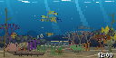
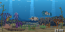
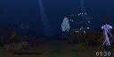
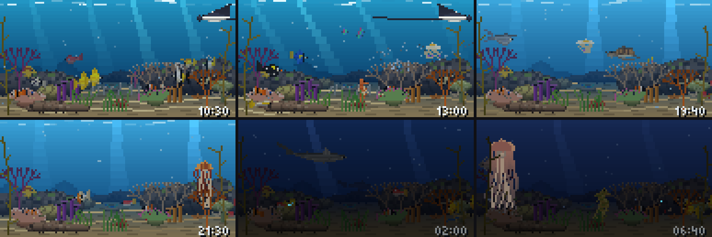

A window into a big public aquarium, the size of a bookshelf. Over a hundred kinds of sea life live their own lives in it: they come and go, hide, hunt and sleep. The light in the water changes with the real time of day.

12:00Noon on the panel, at its real pace of 15 frames a second. No fish here follows a script.
This is not a cartoon on a loop. Every animal has a little program of its own that decides where to swim next, which part of the tank to keep to, and when it is time to leave. Reef fish circle the corals, rays and tuna cross the open water, crabs and lobsters walk the sand.
When a shark goes through, the small fish dash into the reef and the ball of sardines opens round it. The big visitors come out of the blue depth as shadows first and take their colour as they come nearer, because water at a distance is haze.
A presence radar sees when somebody is in the room. The curious ones (a grouper, a Napoleon wrasse, batfish, a turtle, the pufferfish, the octopus) swim to the glass where you stand and turn to look at you. Wave your hand quickly and the small fish hide, the pufferfish blows up into a ball, and the garden eels pull back into the sand.
The light follows the panel's clock. At noon the water is blue, with sun shafts and dancing light on the sand. In the evening it turns violet. At night it is dark blue, lit only by the moon and the jellies, and plankton sparks where a fish darts. The night creatures come out: a whitetip shark, soldierfish, lobsters, the octopus.


There is not a single ready-made picture on the screen. Everything, from a striped butterflyfish to a whale shark, is drawn by the program from a description. Each kind has a body shape (12 of them: spindle, disc, ball, box, shark…), colours for the back, the flank and the belly, a pattern (20 kinds: bars, spots, a mask, a net, rimmed scales), fins, a tail and an eye.
All it takes is one button: the knob on the panel, or OK on the remote.
One press. The tank lights on or off.
Two quick presses. A whole day in five minutes, to watch the light change.
Three quick presses. Back to the real time.
All measured on the panel itself, or in its exact copy on a computer.
A clownfish in its anemone, blue and yellow tangs, a Moorish idol, butterflyfish, angelfish, a lionfish, a pufferfish, a boxfish, triggerfish, a parrotfish, a Napoleon wrasse, a grouper, batfish, shoals of fusiliers and snappers.
A whale shark, a great hammerhead, blacktip and whitetip reef sharks, a grey reef shark, a sand tiger, a zebra shark, a nurse shark, an epaulette shark, a sawfish and a guitarfish.
A manta, a spotted eagle ray, stingrays on the sand and a peacock flounder.
A moon jelly, a sea nettle, a lion's mane, a purple-striped jelly, a fried egg jelly and a rainbow comb jelly.
An octopus and a blue-ringed octopus, cuttlefish, squid and a nautilus.
A spiny lobster, a lobster, crabs, a cleaner shrimp and a rainbow mantis shrimp.
A green turtle, a hawksbill, a loggerhead, two seahorses and a leafy seadragon.
Sea stars, urchins, a sea cucumber, feather stars, a moray in its hole, garden eels, a ball of sardines and a river of anchovies.

Six moments of one day: 10:30, 13:00, 19:40, 21:30, 02:00, 06:40.